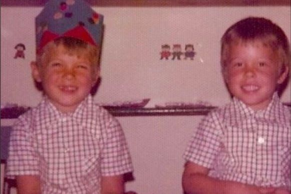

Elon Musk föddes 1971 i Pretoria[5] i Sydafrika som son till Errol Musk, en sydafrikansk elektromekanisk ingenjör, och Maye Musk (född Haldeman), ursprungligen modell från Kanada. Efter att föräldrarna skilde sig 1980 bodde Musk mestadels hos sin far på olika platser i Sydafrika. Musk har dock i vuxen ålder haft en ansträngd relation med sin far.
Vid tio års ålder började Musk använda Commodore VIC-20. Han lärde sig datorprogrammering och vid tolv års ålder sålde han koden till TV-spelet kallat Blastar till en tidning som heter PC and Office Technology för cirka 500 amerikanska dollar. En version av spelet är tillgänglig på webben.
Musk gick på den engelskspråkiga privatskolan Waterkloof House Preparatory School och sedan på den statliga skolan Pretoria Boys High School. Därefter flyttade han från Sydafrika till Kanada i juni 1989, strax före sin 18-årsdag, efter att ha erhållit kanadensiskt medborgarskap genom sin kanadensiskfödda mor.
